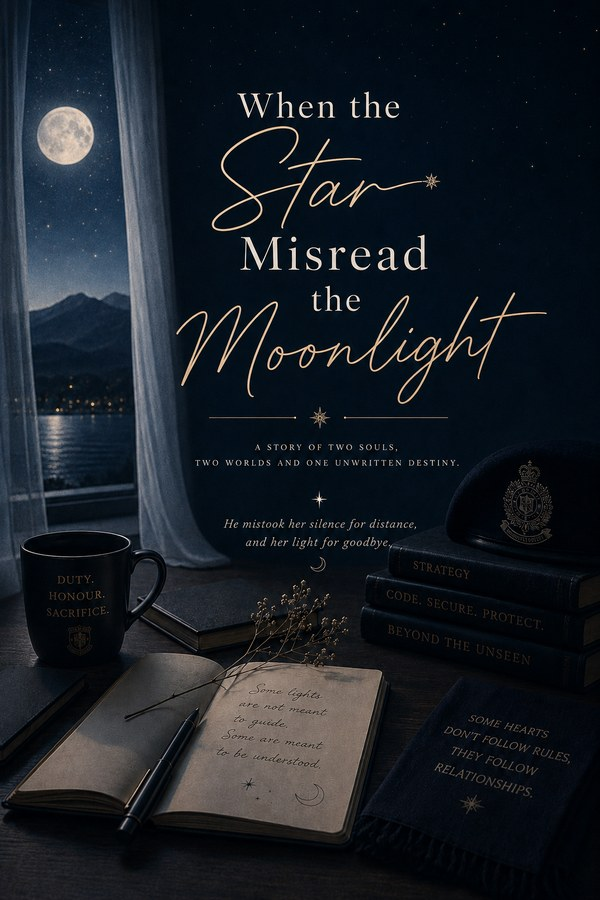

When the Star Misread the Moonlight
Sometimes, the person you misunderstand the most is the person you were never meant to lose.
A slow-burn story set in the Himalayas of Rudraprayag
Read on WattpadIt falls in love because, for the first time, it finally learns how to see it.
Dhruva Singh Rawat is a young, highly disciplined police officer who has built his life around duty, responsibility and control. He doesn’t believe in unnecessary words. He observes more than he speaks. He trusts actions more than explanations. Until a certain woman walks into his carefully ordered world and disrupts it without even trying. He doesn’t understand her, and at first, he doesn’t particularly want to. Because sometimes, one wrong assumption is enough to turn understanding into judgment.
Veneela “Vinni” Singh Kaushal is twenty-three. Brilliant. Independent. Wealthy enough to never need to prove anything, yet humble enough to stand in the same queue as everyone else. A software team lead who can solve impossible coding problems, argue passionately over snacks and turn an ordinary day into complete chaos. Vinni is sunshine with a stubborn streak. She loves deeply, remembers everything, values people over possessions, and carries memories of her parents in everything she does. She has learned how to smile even when life hasn’t been gentle. But there are some things she never talks about. Some wounds don’t need to be visible to hurt.
They couldn’t be more different. One believes in discipline, the other believes life needs a little chaos. One measures words, the other speaks before thinking. One keeps emotions behind locked doors, the other wears hers in the smallest expressions.
Their paths cross in the mountains of Rudraprayag, where police life, technology, family, friendship and unexpected circumstances collide. But this isn’t a love story that begins with love. It begins with a misunderstanding. Words are spoken. Assumptions are made. Silence slowly takes the place of conversation, and sometimes silence can say things far more cruel than words ever could.
Yet life has a strange habit of bringing people back to the places where they left something unfinished. Through awkward encounters. Through quiet acts of care. Through family, friendship and laughter. And eventually, through trust. Because love isn’t always a grand moment. Sometimes it is noticing that someone’s absence makes a room feel different. Sometimes it is remembering how they take their tea. Sometimes it is learning the difference between someone’s silence and their anger. Sometimes it is simply choosing to stay long enough to understand.
Set against the quiet beauty of the Himalayas, this is a story of misunderstanding, healing, friendship, family, found family, grief, resilience, laughter, trust, and a love that takes its time. There will be no instant answers, no easy healing, no perfect people. Only two imperfect human beings trying to understand what they once failed to see.
Two people who don’t complete each other, because neither of them is incomplete.
Meet them
- Dhruva Singh Rawat. A disciplined young police officer. He observes more than he speaks.
- Veneela “Vinni” Singh Kaushal. A brilliant software team lead. Sunshine with a stubborn streak who hides more than anyone realizes.
Because sometimes the star doesn’t fall in love with the moonlight because it shines. A slow-burn story about everything people say… and everything they leave unsaid.